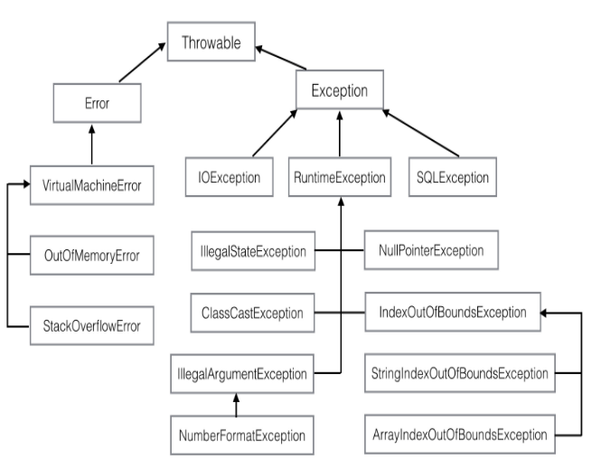

计算机思维逻辑-类
计算机程序的思维逻辑是“老马”的系列文章,文章通过Java语言来介绍计算机技术的本质。第二章节类,介绍了关键字的注意点，继承与多态的概念，类与实例加载细节，继承的破坏性，接口与抽象类，内部类，代码的组织机制，枚举的本质，异常等内容。
原文目录(13-25章)
关键字
final关键字的作用:
- 使得变量值无法被修改
- 使得实例变量、实例方法、类不能被继承
protected:可被继承,在包路径下可进行访问
super和this是不同的，this引用一个对象，是实实在在存在的，可以作为函数参数，可以作为返回值，但super只是一个关键字，不能作为参数和返回值，它只是用于告诉编译器访问父类的相关变量和方法。
定义了带参的构造方法，默认不带参数的构造方法就没有了。
创建对象,默认调用父类的默认的构造方法。
继承与多态
多态，即一种类型的变量，可引用多种实际类型对象。变量(父类)就是静态类型,引用(子类)就是动态类型。静态类型调用动态类型的方法(子类的方法)称为动态绑定。
如果父类没有默认无参构造方法,子类构造函数必须调用父类的一个带参数构造方法,否则会出现错误。
除了调用实例的public方法会造成动态绑定(即静态类型调用动态类型的方法)。使用实例变量、静态变量、静态方法、private方法都是静态绑定的
当有多个重名函数的时候，在决定要调用哪个函数的过程中，首先是按照参数类型进行匹配的，换句话说，寻找在所有重载版本中最匹配的，然后才看变量的动态类型，进行动态绑定。
类与实例加载细节
类加载过程包括(执行初始化代码先父类后子类):
- 分配内存保存类的信息
- 给类变量赋默认值
- 加载父类
- 设置父子关系
- 执行初始化代码(定义静态变量时的赋值语句、静态初始化代码块)
实例创建过程包括(执行实例初始化也是先执行父类后执行子类的):
- 分配内存
- 对所有实例变量赋默认值
- 执行实例初始化代码(定义实例常量时的赋值语句、实例初始化代码块、构造方法)
栈中存放函数的局部变量、入口地址和对象、数组的地址等,堆存放动态分配的对象,方法区存放类信息。
虚方法表优化调用效率
所谓虚方法表，就是在类加载的时候，为每个类创建一个表，这个表包括该类的对象所有动态绑定的方法及其地址，包括父类的方法，但一个方法只有一条记录，子类重写了父类方法后只会保留子类的。
接口与抽象类
接口中的函数都为public类型,接口中的变量都为public static final类型,可用instanceof判断对象是否实现了相应接口。
抽象类和接口是配合而非替代关系，它们经常一起使用，接口声明能力，抽象类提供默认实现，实现全部或部分方法。便于子类对方法的复写。
内部类
每个内部类最后都会被编译为一个独立的类，生成一个独立的字节码文件
内部类的种类:静态内部类、成员内部类、方法内部类、匿名内部类
静态内部类
拥有:静态变量、静态方法、成员方法、成员变量、构造方法等
访问权限:能访问静态变量和方法,不能访问实例变量和方法
Tips:内部类若访问外部私有变量,JVM通过给外部类生成一个方法返回私有变量
成员内部类
拥有:实例变量和实例方法,不能有静态变量和方法(final变量例外)
访问权限:能访问静态变量和方法，实例变量和方法(当内部类与外部类变量、方法重名时,使用”外部类.this.xxx”的方式引用外部类的实例变量或方法)
方法内部类
拥有:实例变量和实例方法,不能有静态变量和方法(final变量例外)
访问权限:定义在静态方法中,能访问静态变量和静态函数;定义在实例方法中,都可以访问(能够访问方法变量,方法参数需要声明为final)
匿名内部类
拥有:实例变量和实例方法,不能有静态变量和方法(final变量例外)
访问权限:匿名内部类可以访问外部类的所有变量和方法，可以访问方法中的final参数和局部变量
代码的组织机制
生成jar包命令jar -cvf packageName.jar dir (dir:为包的最上级目录)
编译时使用classpath参数确定用到的类路径
- jar包:路径名+包名
- class文件:class文件的根目录
import是编译时概念，用于确定完全限定名，在运行时，只根据完全限定名寻找并加载类。
包的组织:供外部使用的类可以放在包的上层，而内部的实现细节则可以放在比较底层的子包内。
枚举的本质
枚举的使用语法:
|
|
枚举的实现原理:
一般枚举变量会被转换为对应的类变量，在switch语句中，枚举值会被转换为其对应的ordinal值(该值会随位置改变而改变)。
枚举类型本质上也是类，但由于编译器自动做了很多事情，它的使用也就更为简洁、安全和方便。
异常
Throwable是所有异常的基类,它有两个子类Error和Exception
- Error:表示系统错误或资源耗尽,由Java系统自己使用,应用程序不应抛出和处理
- Exception:表示应用程序错误,有三个直接子类:IOException(输入输出I/O异常),SQLException(数据库SQL异常),RuntimeException(运行时异常,含义unchecked exception异常;Error及其子类也是unchecked exception)

对于checked异常(表示不可预知的错误产生的异常)，Java会强制要求程序员进行处理，否则会有编译错误，而对于unchecked异常(编程的逻辑错误)则没有这个要求。
异常是相对于return的一种退出机制，可以由系统触发(NullPointerException)，也可以由程序通过throw语句触发，异常可以通过try/catch语句进行捕获并处理，如果没有捕获，则会导致程序退出并输出异常栈信息。异常有不同的类型。
finally:
|
|
在执行到try内的return ret;语句前，会先将返回值ret保存在一个临时变量中，然后才执行finally语句，最后try再返回那个临时变量，finally中对ret的修改不会被返回
|
|
如果finally中有return/throw,不仅会覆盖try-catch中的return还会覆盖其中产生的异常
异常的来源与处理
- 用户:用户输入产生的问题,对策:使用输入检查与提示的方法。
- 程序员:编程上的错误,对策:尽量报告完整的细节,包括异常链、异常栈等
- 第三方:I/O,网络,数据库,第三方服务等,对策同上